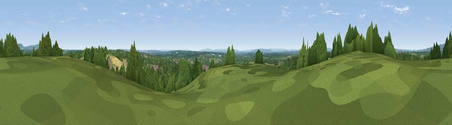

Viewpoint near Rudgwick
#40717 in England · top 60% of its area beats it · near RudgwickWhere it is
The exact computed spot (TQ 07875 34425). Click the marker for map links.
The view, rendered

A 360° render of this exact spot computed from the terrain model, tree cover and land cover — summer colours, afternoon light, calibrated against photographs of famous viewpoints. Real trees, hedges and buildings will differ in detail.
The panorama
Grey silhouette: terrain skyline in each direction (720 bearings, Earth curvature and refraction included). Dashed green: skyline with trees (+15 m) and buildings (+8 m) as obstacles. Blue strip: how far the ground is visible on each bearing.
Where the view opens
Wedge length = distance to the farthest visible ground on that bearing (vegetation-aware). Rings at 10, 25 and 50 km.
What fills the view
47% grassland · 38% woodland · 11% cropland · 3% built-up ·
Angular shares of the visible panorama (visual magnitude), not map area. Landscape diversity 0.48 (0–1 Shannon).
Key numbers
More beautiful places nearby
The staircase of upgrades: each row has a higher view potential than everything closer. Driving times are estimates from straight-line distance, calibrated against real road routing — check an actual route before setting out.
| Place | Direction | Drive | Score |
|---|---|---|---|
| Viewpoint near Slinfold | E · 4 km | ~10 min | 28.2 |
| Viewpoint near Five Oaks | SSE · 6 km | ~13 min | 29.9 |
| Viewpoint near Ewhurst | N · 8 km | ~16 min | 63.9 |
| Pitch Hill | N · 8 km | ~16 min | 64.4 |
| Viewpoint near Holmbury St Mary | NNE · 9 km | ~17 min | 67.0 |
| Viewpoint near Coldharbour | NE · 11 km | ~21 min | 70.0 |
| Viewpoint near Fernhurst | WSW · 17 km | ~29 min | 75.1 |
| Viewpoint near Storrington | S · 22 km | ~36 min | 83.9 |
51.09899, -0.46076 · source: screening · position refined by local search. Computed location — check access rights before visiting.